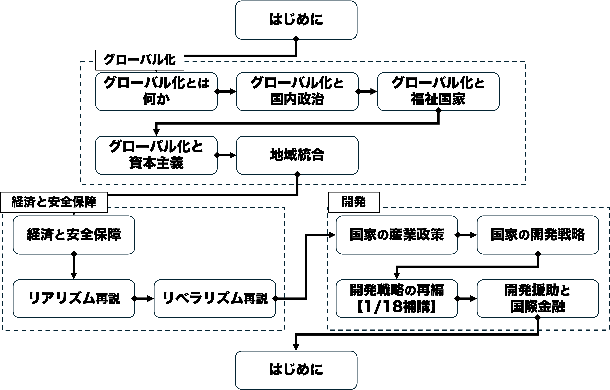
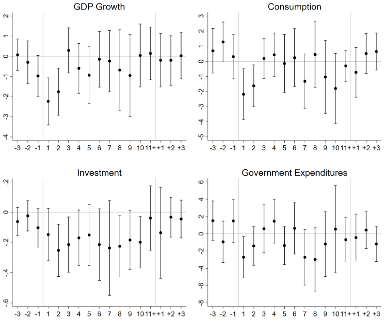

国際政治経済II
2026-11-23
TBD
経済と安全保障の関係について、国際関係論の歴史的展開を踏まえて理解する。また、エコノミック・ステートクラフト、経済安全保障、経済制裁の事例を通じて、経済的手段による安全保障上の目的の追求と、その可能性・限界について考察する。

貿易など国境を超えた経済的なつながりは国家の安全に対してどのような影響を与えるでしょうか。
また、安全保障問題が経済に対して与える影響はどのようなものがあるでしょうか。
国際関係における戦争や平和といった現象を考察
国際関係という文脈における、政治と経済の関係を考察
東西冷戦の一方、国内的には高度成長
安全保障問題と経済問題の断絶を強調
経済問題よりも安全保障問題の重要性を強調
経済と安全保障の繋がりが意識→IPEの誕生
政治的目的を達成するため、軍事的手段ではなく経済的手段を用いて他国に影響を及ぼそうとする試み
エコノミック・ステートクラフト（ES）は経済的な手段を用いて相手国の行動を変えようとする試みでした。
しかし、ESは効果を挙げていると言えるでしょうか？理由も含めて意見を述べてください。
経済制裁含むESに効果はあるかは研究上でも論争

ただしESには効果を失ったり逆効果になったりするリスクも
経済上の措置を講じ国の平和と安全や経済的な繁栄等の国益を確保すること
経済安全保障の国際的な枠組みで、通常兵器や大量破壊兵器の不拡散のための取り決めの総体
国際社会がその総意に基づいて、経済を手段として特定国に特定の行動を取らせるよう強制する措置
冷戦終結後に一気に活発化
Q. なぜ90年代以降に経済制裁が盛んになった？
経済と安全保障の関係について、国際関係論の歴史的展開を踏まえて理解する。また、エコノミック・ステートクラフト、経済安全保障、経済制裁の事例を通じて、経済的手段による安全保障上の目的の追求と、その可能性・限界について考察する。
経済と安全保障